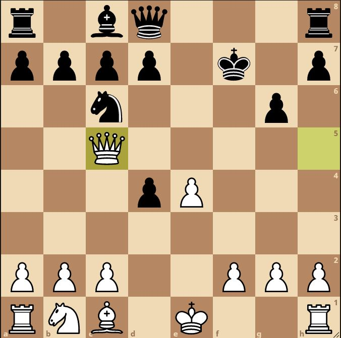

Scotch Game: Scotch Gambit, Sarratt Variation
One of my most played openings actually does not come from me playing the scotch, I actually play the Giuoco Piano, and then I push the pawn to e4, also known as the Rosentreter Gambit. Once black takes the e4 pawn with his pawn, then this transposes into the scotch gambit, haxo gambit. From here I could play 5. c3, and go into another line, but for this opening I play 5. Ng5, immediately applying pressure on the f7 pawn near the king.
1. e4 e5 2. Nf3 Nc6 3. Bc4 Bc5 4. d4 exd4 5. Ng5

Black is forced to put his knight on the rim, or else the position will be difficult to deal with.
Why 5...Ne5 is a mistake
If black continues with 5...Ne5, we simply capture the weak pawn next to the king with the knight, 6. Nxf7
The knight must recapture, as the queen and rook are forked. A very forced line, with a bunch of trades(bishop recaptures knight, king captures bishop) then comes 8. Qh5+, winning back the bishop, and another pawn on the next move (black has no way to protect its d4 pawn).
1. e4 e5 2. Nf3 Nc6 3. Bc4 Bc5 4. d4 exd4 5. Ng5 Ne5 6. Nxf7 Nxf7 7. Bxf7+ Kxf7 8. Qh5+ g6 9. Qxc5 d6 10. Qxd4 Nf6
After all is said and done, White is up a pawn, and would be much easier to play as in my opinion.
6...Bb4+ can also be tried, for example 6...Bb4+ 7. c3 dxc3 8. bxc3 Nxf7 9. cxb4.
5...Nh6 (Main Line)
After black plays 5...Nh6, the main move is to capture the f7 pawn. Capturing with the knight or bishop will transpose to similar position, with small differences.
After white captures the f7 pawn, a bunch of pieces will get traded off. The material will be equal but Black's king is a bit open.
6. Nxf7 Nxf7 7. Bxf7+ Kxf7 8. Qh5+ g6 9. Qxc5
6. O-O
6. O-O is a sideline I have not tried.